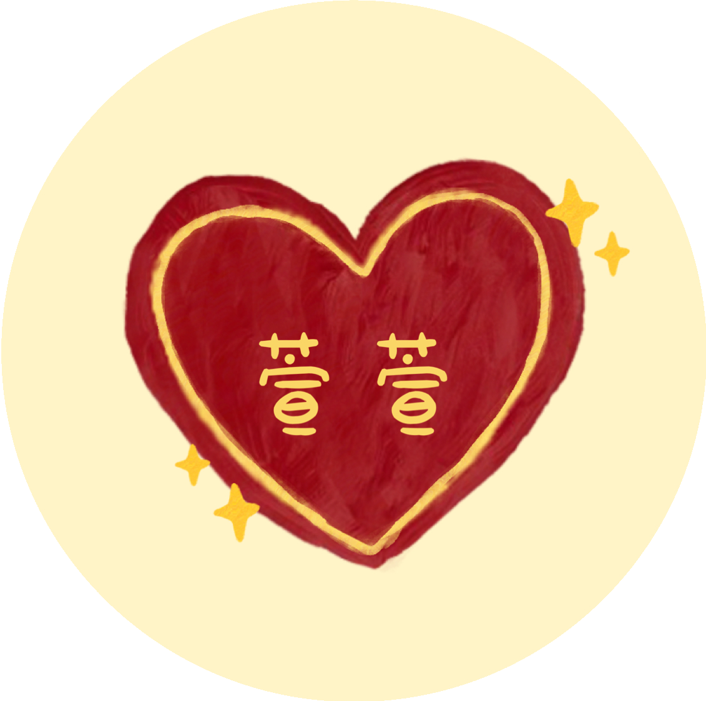
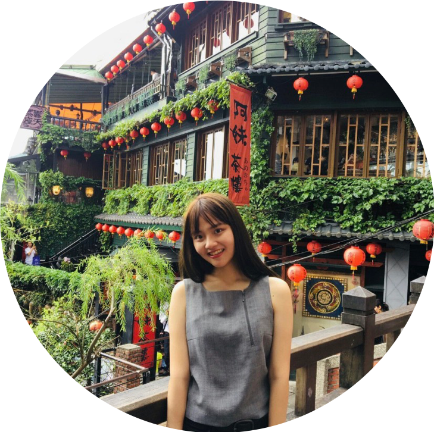
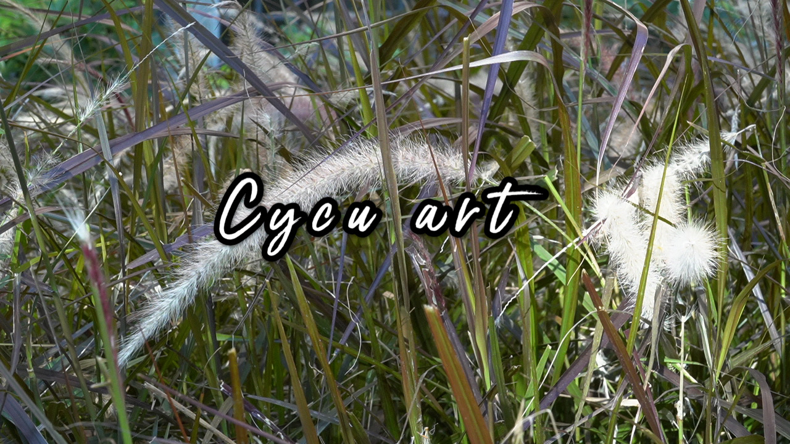
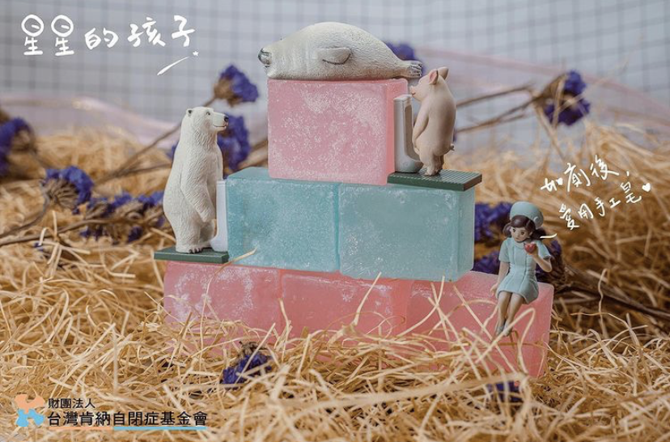
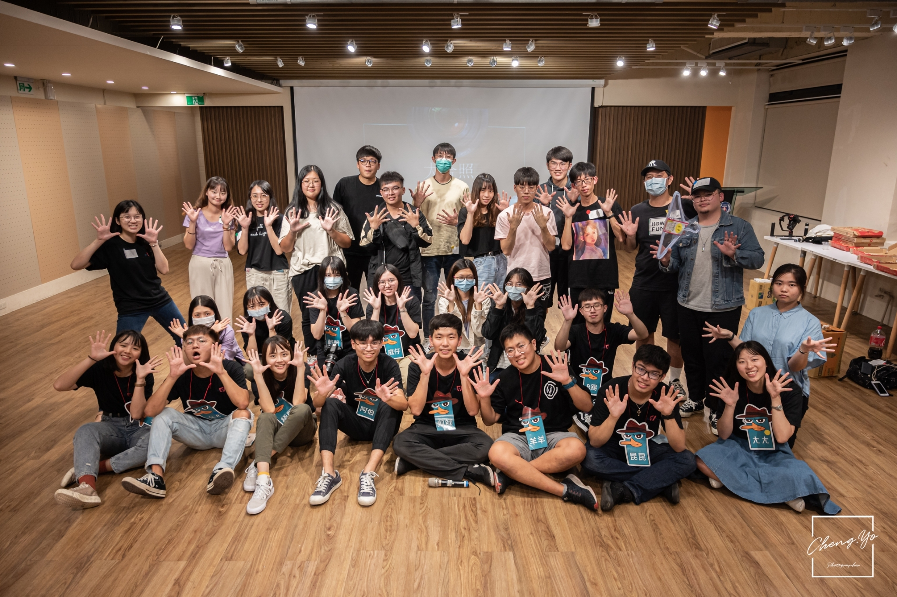
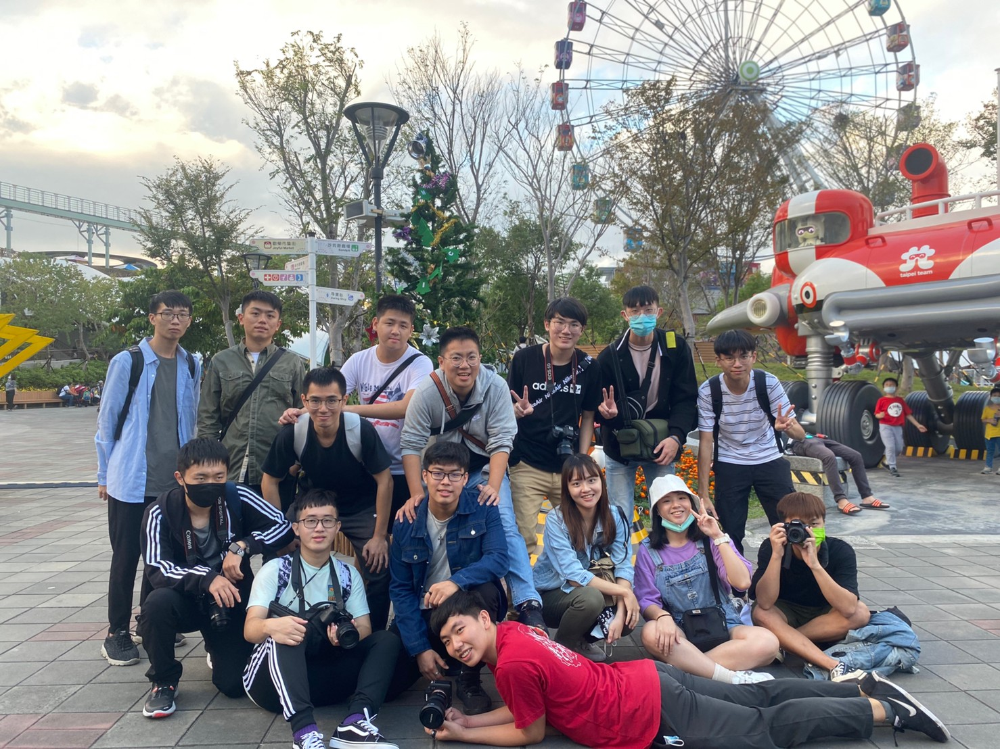
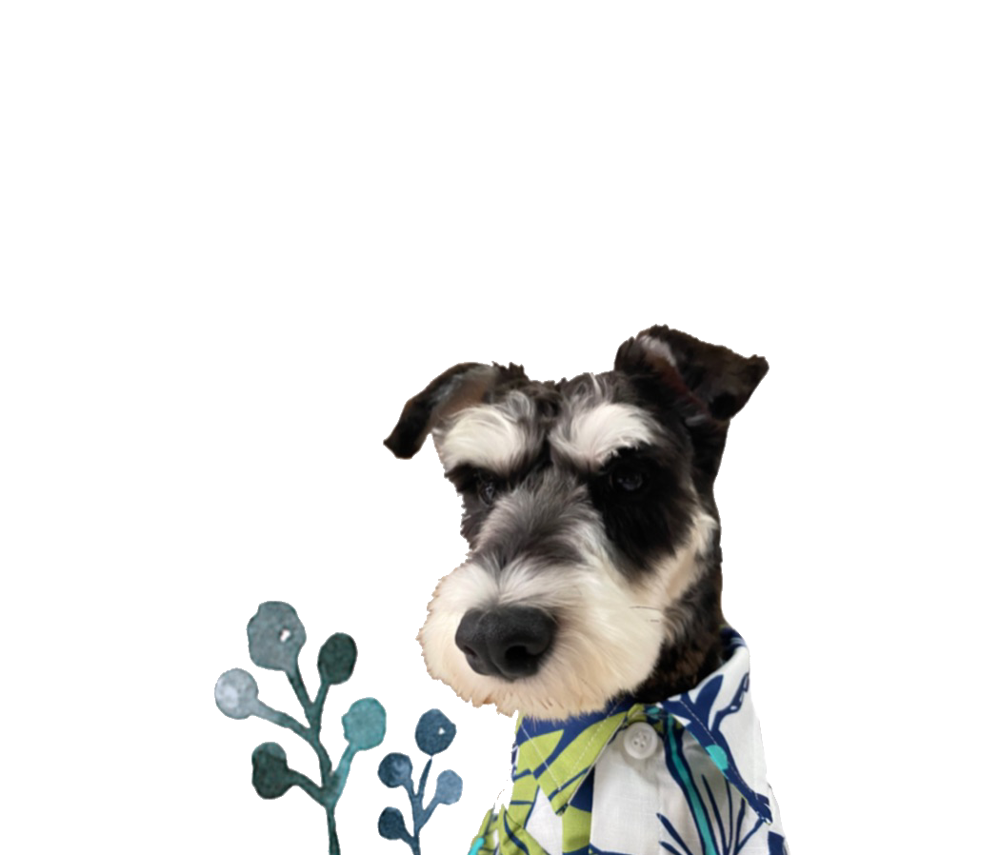

<!DOCTYPE html>
<html lang="en">
<head>
    <meta charset="UTF-8">
    <meta name="viewport" content="width=device-width, initial-scale=1.0">
    <title> Resume </title>
    <link rel="stylesheet" href="assets/css/resume.css">
</head>
    

<body>
<div class="flex">
        <div class="item">
            <div class="me">
                <div class="photo">
                
                
                </div>
                <div class="i">
                <p>&nbsp;&nbsp;&nbsp;&nbsp;林其萱<br>
                    &nbsp;&nbsp;&nbsp;&nbsp;其展風華   萱榮葉茂</p>
                </div>  
            </div>      
            <div class="introduce">
                <div class="name1">
                <h1>中原大學｜資訊管理學系<br></h1>
                </div>
                <div class="quote">
                <p>「大學如同一片汪洋，我是一塊海綿，在這吸納了無數的知識。」</p>
                </div>
                <div class="say">
                    <p>鴻飛千里，海納百川 ; 聚才乃壯，富士則康。<br>
                        <br>
                        培植自己的實力，我能飛千里<br>
                        培植別人的實力，我能納百川<br>
                        我與我的夥伴們齊聚一堂<br>
                        我們心靈富裕，邁向康莊。
                    </p><br>
                </div>
                <div class="social">
                    <a href="https://www.facebook.com/profile.php?id=100005805035425" target="_blank">
                    
                    </a>
                    <a href="https://instagram.com/hsuan_0203?r=nametag"target="_blank">
                    
                    </a>&nbsp;&nbsp;
                    <div class="mail">
                    <a href="mailto:sherry60224@gmail.com" target="_blank">
                    
                    </a>&nbsp;&nbsp;&nbsp;&nbsp;
                    </div>
                    <a href="https://github.com/sherry-43/sherry-43.github.io" target="_blank">
                    
                    </a>
                </div>
            </div>
        </div>
        <h3>Programming Skill</h3>
    <div class="container">
            <div class="program">
                <div class="skillbox ">Python
                    <div class="skill">
                        <div class="skill_level python" style="width: 63%">
                            63%
                        </div>
                    </div>
                </div>
                <div class="skillbox">Java
                    <div class="skill ">
                        <div class="skill_level java" style="width: 65%">
                            65%
                        </div>
                    </div>
                </div>
                <div class="skillbox">HTML CSS JS
                    <div class="skill ">
                        <div class="skill_level html" style="width: 75%">
                            75%
                        </div>
                    </div>
                </div>
                <div class="skillbox">PR
                    <div class="skill ">
                        <div class="skill_level pr" style="width: 80%">
                            80%
                        </div>
                    </div>
                </div>
                <div class="skillbox">Powerpoint
                    <div class="skill ">
                        <div class="skill_level ppt" style="width: 85%">
                            85%
                        </div>
                    </div>
                </div>
            </div>
    </div>
        <h3>Learning Autonomy</h3> 
    <div class="out">
        <div class="left">
            <button class="accordion">掌握投資情報的最佳利器：台灣經濟新報TEJ資料庫講習</button>
            <div class="panel">
             <p> 參與了圖書館所舉辦的台灣經濟新報TEJ資料庫講習，不僅理解這相關領域的特性外，
                 也讓我們實際操作資料庫的應用，了解到客戶涵蓋的範圍，也認識到證券金融市場基本分析所需的資訊，加以解析亞洲各區的企業情報及財務報表資料。</p>
            </div>
        
            <button class="accordion">財務金融數據的研究利器：S＆P Capital IQ平台講習</button>
            <div class="panel">
             <p> 參與了圖書館所舉辦的S＆P Capital IQ平台講習，而Capital IQ 提供全球公司、
                 市場和人員資訊，與強大的基本面分析、標準化財務模板、債務及市場分析，覆蓋全球市值的99%。</p>
            </div>
        
            <button class="accordion">生命的『藺』一種可能</button>
            <div class="panel">
            <p> 經由這次活動不但讓我對傳統工藝有深層的體驗，更讓我有學習的機會，
                透過實作讓我知道藺草的編織手法，是多麽的複雜與耗時，最後我希望這些珍貴的傳統工藝能被保存下來並且達到永續發展的目標。</p>
            </div>
        </div>
        <div class="right">
            <div class="art"><a href="https://youtu.be/RviN4wNSeik" target="_blank"></a></div>
                <div class="web">
                <p> 大二上與其他三位同學一起製作網頁，而我們這組專案則介紹學校藝文，想把中原的藝文活動分享給大家。在這次專案中，
                    讓我從中學習到很多網頁設計的知識，而令我很感興趣的部分是剪輯和拍攝影片，第一次使用pr，一步一步上網找教學，
                    這過程很有趣、很新奇，最後看到自己的成品放在網頁上，真的很有成就感！</p>
                <div class="web2">
                <a href="https://10844108.github.io/school.html" target="_blank">網站介紹</a>
                </div>
                </div>
        </div>
    </div>
    <h3>School  Experience</h3> 
    <div class="exp">
              <div class="school">
              <h5>企業概論&nbsp;&nbsp;|&nbsp;&nbsp;星星的孩子</h5>
              </div>
            <div class="star1">
              <div class="pics">
                  
                  
              </div>
                <div class="aa">
                    <div class="cc">
                    <p>肯納基金會</p>
                    </div>
                    <p>因高中當了三年的會計小老師，因此在這期間我當任本組的財務長，負責盤點、紀錄、管錢及製作資產負債表和綜合損益表，幫助肯納症基金會的孩童銷售肥皂。</p>
                    <div class="website">
                    <a href="https://www.instagram.com/children_of_the_stars_/?igshid=1g21mt38p8fa9" target="_blank">網站介紹</a>
                    </div>
                </div>      
            </div>

  
        <div class="club1">
                <div class="club2">
                <h5>影片創作社&nbsp;&nbsp;|&nbsp;&nbsp;教學長</h5>
                </div>
            <div class="star2">
                <div class="picss">
                    
                    
                </div>
                <div class="bb">
                  <div class="cc">
                  <p>第十屆幹部</p>
                  </div>
                  <p>自從成為影片創作社的一份子之後，我成長了許多。從寫劇本、攝影、拍片、剪輯...等，各方面能力都有明顯的進步，深深感受到自己的付出努力有得到成果。</p>
            </div>
        </div>
    </div><br><br><br><br><br>

    <h3>Film Portfolio</h3> 
    <div class="film">
        <div class="left1">
            <div class="mo">
            <h5>企業概論&nbsp;&nbsp;|&nbsp;&nbsp;公益廣告宣傳片</h5>
            </div>
            <div class="mov">
                <iframe width="500" height="300" src="https://www.youtube.com/embed/UWuFTD1y7Kc" frameborder="0" allow="accelerometer; autoplay; clipboard-write; encrypted-media; gyroscope; picture-in-picture" allowfullscreen></iframe>
            </div>
            <div class="dog1">
                
            </div>
        </div>
        <div class="right1">
            <div class="mo1">
                <h5>國文報告&nbsp;&nbsp;|&nbsp;&nbsp;劉半農</h5>
            </div>
            <div class="mov1">
                <iframe width="500" height="300" src="https://www.youtube.com/embed/o62ZdghGS5Q" frameborder="0" allow="accelerometer; autoplay; clipboard-write; encrypted-media; gyroscope; picture-in-picture" allowfullscreen></iframe>
            </div>
            <div class="dog2">
                
            </div>
        </div>
    </div>

</div>
<script src="assets/js/resume.js"></script>
</body>
</html>